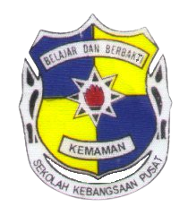
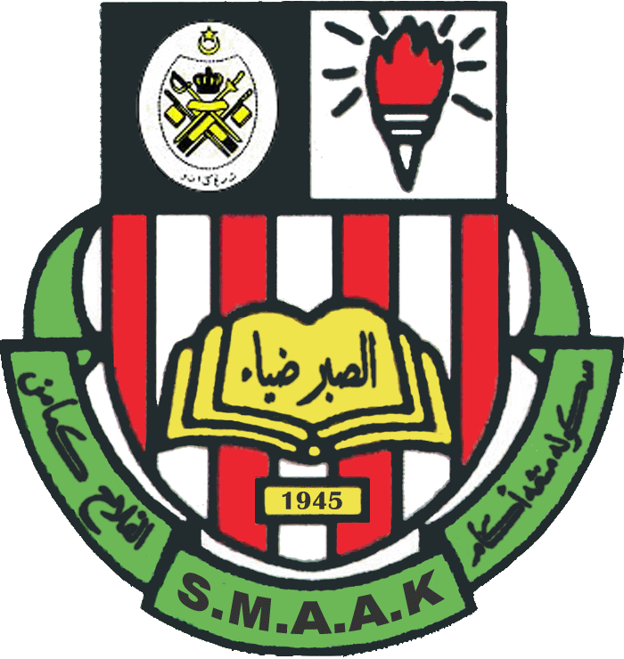

| PUSAT ASUHAN TUNAS ISLAM (PASTI) ADAM MAK CHILI KEMAMAN
PASTI Adam Mak Chili is a pre-school care center that emphasizes Islamic education starting from the age of 4. READ MORE |
|
|---|---|
| SEKOLAH KEBANGSAAN PUSAT KEMAMAN
Sekolah Kebangsaan Pusat is a National School located at Km 5 Chukai, Kemaman, Terengganu Darul Iman , Malaysia. READ MORE |
 |
 |
SEKOLAH MENENGAH AGAMA AL-FALAH KEMAMAN
Al Falah Religious High School or Al Falah High School is a Religious High School located in Jalan Padang, Chukai, Malaysia. READ MORE |
| SEKOLAH MENENGAH GELIGA KEMAMAN
Sekolah Menengah Kebangsaan Geliga or SMK Geliga for short , is a Sekolah Menengah Kebangsaan Geliga located in Kampung Geliga, Kemaman, Malaysia . This school was built on an 18-acre site on August 16, 1998. SMK Geliga is located 5 km from Chukai town, Kemaman. The location is close to the beach. Most of the residents around SMK Geliga work as fishermen. SMK Geliga is also surrounded by traditional Malay villages. READ MORE |
|
| UNIVERSITI TEKNOLOGI MARA CAWANGAN MACHANG KELANTAN
UiTM Kelantan Branch (UiTMCK) is one of the branches of Universiti Teknologi MARA located in the state of Kelantan Darul Naim. It was established in July 1985 as the ninth UiTM branch campus in a temporary location near Kota Bharu. Currently, the UiTM Kelantan branch campus is at its permanent location in Machang after moving in January 1996. READ MORE |